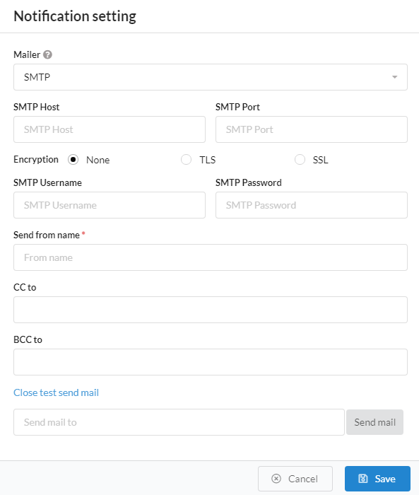

FAT Services Booking Documentation
visit roninwp.comEmail Setting
To send email notification, you need config your mail hosting. To config, please do follow:
- Log into your WordPress admin panel.
- Navigate to FAT Services Booking » Settings.
- Click at Email notification
- Select mail config in popup window


- 1. Mailer : Set up mail server which handler all outgoing email from your website.
- 2. SMTP Host : If you select 'Mailer' is SMTP, you need config for 'SMTP Host'. This is the server that hosts the outgoingSMTP server. Example: smtp.gmail.com
- 3. SMTP Port : If you select 'Mailer' is SMTP, you need config for 'SMTP Port'. This is port to connect to the email server. Example: 465 or 587 if use Gmail
- 4. Encryption : If you select 'Mailer' is SMTP, you need config for 'SMTP Port'. This is option to securing your email
- 5. SMTP Username and SMTP Password : If you select 'Mailer' is SMTP, you need config for 'SMTP Username' and 'SMTP Password'. Plugin will be use this information to connect to your SMTP Host
- 6. Send from name : You need config for both Mailer type (SMTP and Default). This is use to display name to mail sent
- 7. CC to and BCC to : CC and BCC are both ways of sending copies of an email to additional people. CC stands for “carbon copy,” while BCC stands for “blind carbon copy.”
- 8. Test send mail : After config and click 'Save' button. You can re-open email notification and click 'Test send mail' to test your email config. To test send mail, please click 'Test send mail' and typing email of receiver and click 'Send mail'.